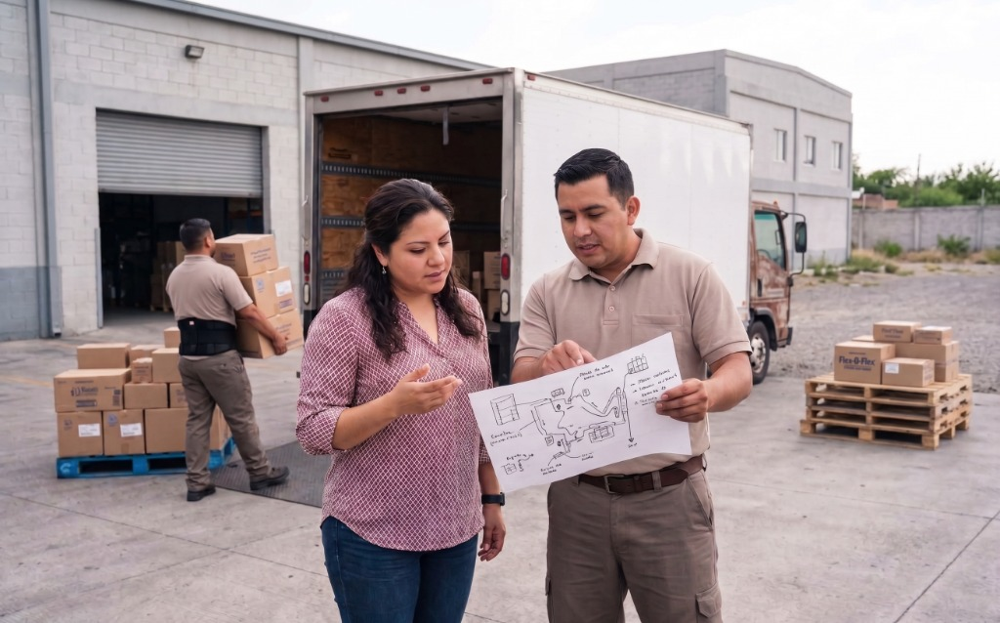

Ver transcripción
Elemento 1: Diagnosticar. Esta es la fase que sienta las bases técnicas de todo el proyecto.
El Elemento 1 produce 4 documentos: el diagnóstico de oportunidades de transformación digital, el diagnóstico de madurez digital y disposición al cambio, la propuesta de transformación digital y, finalmente, la propuesta con el Visto Bueno del cliente.
En el caso de El Surtido, Raúl recibirá al consultor con una hoja de cálculo de 3 años de pedidos y un mapa de rutas dibujado a mano. El diagnóstico revelará la realidad técnica de la empresa: infraestructura básica, procesos manuales desconectados y una gran disposición al cambio. Con esa información, construirás la propuesta priorizada que guiará todo el proyecto.
Recuerda: sin un diagnóstico preciso, la solución que construyas en el Elemento 2 no responderá a las necesidades reales de la MiPyME.
1.1 Visión General

En este primer tema se aborda el primer paso de la Creación de soluciones tecnológicas con IA en la modernización digital de la MiPyME, y que corresponde con el primer elemento del estándar de competencia, que es “Diagnosticar oportunidades de modernización digital en la MiPyME”.
En este tema se considera la creación de productos como el diagnóstico de oportunidades de modernización digital, el diagnóstico de madurez digital y disposición al cambio, la propuesta de modernización digital elaborada y autorizada.
1.2 Cómo se te evaluará en este elemento

Recuerda que la evaluación de competencias, se compone por la valoración de diferentes tipos de evidencias, en la fase inicial de diagnóstico de oportunidades de modernización, deberás demostrar lo siguiente:
| Tipo de evidencia | Cantidad | Cómo se valora |
|---|---|---|
| Desempeños observables | No hay desempeños en este elemento | El Elemento 1 no tiene desempeños observables: toda la evidencia es documental. |
| Productos entregables | 4 productos | En tu evaluación se revisarán los productos que elaboraste antes de la sesión, contrastándolos contra los criterios del estándar uno por uno. |
| Conocimientos | 4 áreas | Se te aplicará un cuestionario que mide el dominio aplicado de los conocimientos exigidos para este elemento. |
| Actitudes, hábitos y valores | 1 (Orden) | Se observará la presencia de esta AHVa a través de la presentación de los productos. |
1.3 Productos derivados del diagnóstico de oportunidades
Haz clic en cada producto para ver la información.
Producto 1.1 · El diagnóstico de oportunidades de modernización digital de la MiPyME documentado
El documento que presente Ana Liz para efectos de evaluación de certificación, debe incluir las siguientes características, tal como las establece el estándar:
- El perfil de la MiPyME, especificando su tamaño, giro, colaboradores, ubicación, nombre y correo electrónico de la persona de contacto.
- El resumen de la sesión sostenida con el responsable de la MiPyME, especificando día, hora, lugar, asistentes y acuerdos tomados en la reunión.
- Las necesidades de modernización digital detectadas correspondientes con lo expresado por los representantes de la MiPyME.
- El análisis de infraestructura tecnológica existente especificando el hardware, software y conectividad con la que cuenta la MiPyME.
- Las experiencias en implementación de soluciones de modernización digital con las que cuenta la MiPyME.
Producto 1.2 · El diagnóstico de madurez digital y disposición al cambio de la MiPyME elaborado
El documento que presente Ana Liz debe incluir:
- El estado digital o tecnológico actual de la MiPyME.
- El estado de los activos de información y su grado de estructuración.
- El estatus de disposición al cambio de la MiPyME.
- Indica las brechas digitales/tecnológicas existentes entre el estado actual de la MiPyME y la expectativa de modernización digital,
- Incluye la información disponible de la MiPyME con relación al tema de modernización digital, y
- Menciona la fecha del diagnóstico, el nombre de la MiPyME, a quién va dirigido y el nombre de la empresa consultora/consultor que lo realizó.
Producto 1.3 · El documento de propuesta de modernización digital para la MiPyME elaborado
El documento que presente Ana Liz debe incluir:
- Las propuestas de modernización digital correspondientes con las necesidades detectadas en la MiPyME, por orden de prioridad de atención.
- Los requerimientos funcionales y no funcionales para la implementación de la modernización digital de acuerdo con los diagnósticos realizados.
- Información sobre las tecnologías, APIs y servicios de IA seleccionados con su justificación técnica.
- El diagrama de arquitectura del sistema propuesto con sus componentes.
- El modelo de datos y flujo de información entre componentes de la propuesta de solución tecnológica.
- Los aspectos de ciberseguridad, manejo de información confidencial y normativas aplicables.
- El presupuesto y calendarización para la implementación de la propuesta.
Producto 1.4 · La propuesta de modernización digital para la MiPyME autorizada
El documento presentado debe incluir:
- Las modificaciones al documento original presentado.
- El VoBo de la persona responsable por parte de la MiPyME.
Templates descargables — Elemento 1
El Elemento 1 produce 4 documentos que son la base del proyecto de modernización digital. Descárgalos, llénalos con los datos de tu MiPyME real y tendrás los entregables listos para presentar en tu evaluación. El Producto 1.4 debe tener el VoBo firmado del responsable de la empresa — sin esa firma el elemento no puede cerrarse.
La actitud, hábito o valor de ORDEN
Como parte de las evidencias de producto, también se evalúa el orden, para efectos del estándar, es la manera en que estructura y presenta la información de la propuesta de modernización digital para la MiPyME de manera lógica y coherente conforme sus componentes.
El Orden en el Elemento 1 se manifiesta en la coherencia entre tus diagnósticos y la propuesta: cada sección de la propuesta debe derivarse lógicamente de los diagnósticos previos. Si el diagnóstico de oportunidades identifica tres problemas, la propuesta debe abordarlos en el mismo orden y con la misma numeración. En tu evaluación, se observará esta consistencia durante la revisión de tus documentos.
1.4 Los conocimientos del Elemento 1
En tu evaluación se te aplicará un cuestionario con reactivos diseñados para verificar que dominas las áreas de conocimiento requeridas y relacionadas con el diagnóstico de oportunidades. El nivel Conocimiento indica que debes reconocer hechos o componentes; el nivel Comprensión indica que debes poder explicar el concepto y reconocer su aplicación.
| Área de conocimiento | Nivel |
|---|---|
| Contenido indispensable de un Contrato de Prestación de Servicios de Consultoría Tecnológica. | Conocimiento |
| Protección de datos personales en soluciones de IA para MiPyME: clasificación de datos en el contexto de IA; transferencia de datos a terceros mediante herramientas/plataformas de IA generativa; compatibilidad del aviso de privacidad de la MiPyME con soluciones de IA propuestas; obligaciones legales de la MiPyME derivadas del uso de herramientas/plataformas de IA generativa conforme a la LFPDPPP; controles de acceso y autenticación en herramientas/plataformas de IA. | Comprensión |
| Importancia del consentimiento informado para el uso de la información de las MiPyMEs. | Comprensión |
| Principios del Sistema de Gestión de IA de acuerdo con la ISO/IEC 42001, aplicados a las MiPyMEs: gobernanza; transparencia; gestión de riesgos específicos de IA; mejora continua de los sistemas implementados. | Conocimiento |
1.5 Ponte a prueba
Refuerza algunos conceptos clave con estas tarjetas
Voltea cada tarjeta. Frente: el concepto o pregunta del estándar. Reverso: la respuesta aplicada al caso El Surtido.
Practica el diagnóstico con El Surtido
Llegaste a la primera reunión con Raúl. Tienes 2 horas. Pon en práctica los criterios tomando decisiones de diagnóstico reales.
Decisiones en el diagnóstico
Raúl tiene prisa. Decide cómo responderías en la reunión inicial.
Segunda decisión: los tiempos del diagnóstico
Raúl acepta el diagnóstico pero pregunta cuánto tardará.
Continúa con el Elemento 2
Con el diagnóstico hecho y la propuesta autorizada por Raúl, el siguiente paso es construir la solución. El Elemento 2 cubre el desarrollo técnico completo: entorno, código, pruebas y documentación.